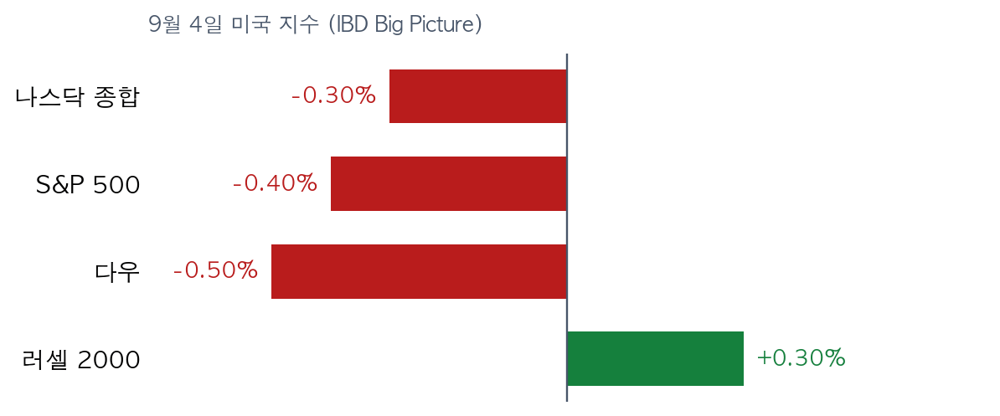
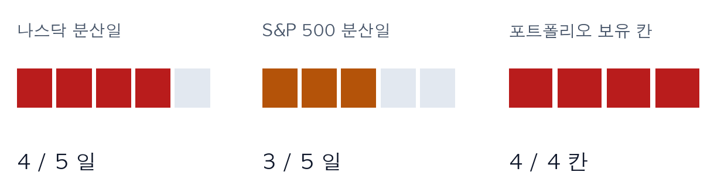
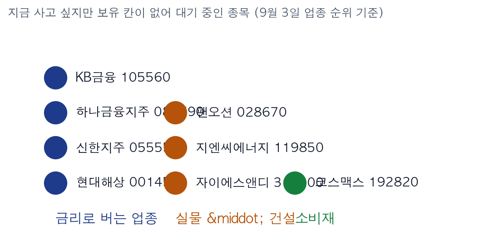

162,000 Jobs: Seoul Closed Before It Could Price This In
Korea Economic Daily & Maeil Business News, Sept 5 print + IBD Big Picture, Sept 4, 5:40 pm ET | Market data as of the Sept 4 close | This is the Rex Way, ZekiRex™
KOSPI Sep 4 6,687.21 | KOSDAQ Sep 4 813.50 | Foreign net buy +459bn won | IBD exposure 60-80% | Nasdaq dist. days 4 / 5 | Cash 0.01% |
EXECUTIVE TAKEAWAY
|
Korea trades on Monday, September 7. The US is shut for Labor Day. Korea therefore prices this payroll number first.
What to do now
The levels we carry into Monday, September 7
The four holdings
Only 2.06% of room is left above the stop, and the position is 6.07% below our cost. If 59,156 breaks, the rule sells. We neither pre-empt it nor wait. Stop 59,156 won (8% below our 64,300 cost) |
Up 5,000 won on Friday and 6.63% above our cost. Oil & gas ranks first in our sector table and the stock carries a relative strength of 94. Stop 106,904 won (8% below our 116,200 cost) |
Up 620 won on Friday and 6.06% above our cost. It is also one of the chip names the Korea Economic Daily flagged for currency-driven earnings pressure. Stop 11,850 won (8% below our 12,880 cost) |
Down 4,800 won on Friday, which puts it exactly back at our cost. Neither gain nor loss, with 8.00% of room above the stop. Stop 134,136 won (8% below our 145,800 cost) |
Names we want but cannot buy
We hold at most four names at a time, and all four slots are taken. To buy anything below, we would first have to sell something above.
Relative strength 92, and P&C insurance ranks fourth in our sector table. Higher policy rates widen the interest income these insurers earn. |
Relative strength 98, the highest on our waiting list. Construction climbed three places in a week to rank fifth. |
The three banks carry relative strength of 83, 83 and 81. Banks rank eighth. The further the Fed leans toward a hike, the better this group earns. |
These fail our quality floor; Lotte Rental grades lowest on sales and margin. Unlike the waiting list, excluded means not a candidate at all right now. |
Allocation
| Sleeve | Weight | Why |
| Cash | 0.01% | 118,160 won. Every slot is taken, so there is nothing to add with |
| Equity (long) | 99.99% | Four names at 22-28% each, against a per-name cap near 25% |
| Hedge | 0% | Our strategy does not use inverse products or index futures |
Did any defensive rule fire today? Only one is close.
· The 8% stop: Tiger Elec sits 2.06% above its stop. The other three have room.
· Distribution-day defence: IBD counts four on the Nasdaq and three on the S&P 500. Five would cut equity below 40%. It has not fired.
· Partial profit on a 21-day or 50-day break: no holding qualifies today.
· The 8% stop: Tiger Elec sits 2.06% above its stop. The other three have room.
· Distribution-day defence: IBD counts four on the Nasdaq and three on the S&P 500. Five would cut equity below 40%. It has not fired.
· Partial profit on a 21-day or 50-day break: no holding qualifies today.
So what do you do: There is no money to buy with on Monday. Watch whether Tiger Elec holds 59,156. Only if that slot frees up can the first name on the waiting list be bought.
Intraday checklist
| Watch | Level | Meaning |
| Foreign net buying | A third straight day? | Friday made it two in a row. A break signals give-back |
| USD/KRW | 1,358.50 | A lower rate trims exporters' earnings estimates |
| KOSPI support | 6,687.21 | Friday's close. Opening below it is the payroll number arriving |
| Tiger Elec | 59,156 won | A break sells, by rule |
Three concrete signs of a floor. First, foreigners extend net buying to a third day. Second, the KOSDAQ finishes a session above 813. Third, the index falls on shrinking volume rather than rising volume.
Why
The question behind the page, and the evidence for it
Today's question: what is missing from Friday's KOSPI close?
A 58% chance of a September hike is missing. Korea closed at 3:30 pm on Friday. The US payroll report came out after that. The 6,687.21 print therefore had no time to absorb the result.
Both Korean papers do carry the number, because their print deadline falls later than the Korean market close. That makes this weekend an unusual setup: readers have already seen the figure, but the market has not priced it.
On Monday, September 7, the US is closed for Labor Day. The overnight American tape that normally sets the tone will not exist. Korea has to answer first.
Both Korean papers do carry the number, because their print deadline falls later than the Korean market close. That makes this weekend an unusual setup: readers have already seen the figure, but the market has not priced it.
On Monday, September 7, the US is closed for Labor Day. The overnight American tape that normally sets the tone will not exist. Korea has to answer first.

US indexes fell after the payroll print. The Dow lagged and small caps held up. Volume shrank, so no distribution day was added. (IBD Big Picture, Sept 4)
How each outlet reads it
| Outlet | Its line today | Where |
| Korea Economic Daily | Rates up, the won up: exporters get squeezed from both sides | Sept 5, pages A10, A1, A13 |
| Maeil Business News | Payrolls are strong, but the Fed itself is split, so September is a coin flip | Sept 5, pages 8 and 11 |
| IBD | Down but the uptrend holds: keep exposure at 60-80% | Big Picture and Market Pulse, Sept 4 |
What separates them is timing, not judgement. The Maeil markets page describes crypto-linked stocks rallying. That was Thursday in New York, when a rate hold still looked likely. Friday's payroll print overturned that expectation. The paper is not wrong; its deadline is simply earlier. The Korea Economic Daily closed slightly later and did carry the hike risk.
What the US session added after the papers closed
| Item | Value | Route into Korea |
| August nonfarm payrolls | +162,000 vs 55,000 expected | July was also revised from a loss to a gain |
| Odds of a September hike | 58%, from 49% a day earlier | A higher discount rate hits growth names first |
| 10-year Treasury | 4.78% | Widens the interest income banks and insurers earn |
| Exposure / distribution days | 60-80% / 4 Nasdaq, 3 S&P | Not yet a level that forces us to cut |
| WTI crude | $91.20 a barrel | Feeds refining margins at names such as GS |
IBD Market Pulse, Sept 4: leaders up in volume were Samsara (IOT) and Five Below (FIVE); leaders down in volume were UiPath (PATH) and HP Enterprise (HPE).

The two left gauges are IBD distribution-day counts; a fifth would cut equity below 40%. The right gauge is our own position slots, all four filled.
Korea: tape and flows
Korea actually rose on Friday. The KOSPI finished at 6,687.21. We grade that regime yellow: it clears five of our seven trend tests, and the failure that matters is trading below the 50-day average.
The KOSDAQ closed at 813.50 and grades red, clearing only two of seven. The two markets are not in the same condition.
The KOSDAQ closed at 813.50 and grades red, clearing only two of seven. The two markets are not in the same condition.

KOSPI net buying by investor type on Sept 4. Retail sold 3.72 trillion won; institutions, corporates and foreigners absorbed it. (Naver Finance, trillions of won)
The line to watch is the foreign one. They bought 41.4 billion won on Thursday and 479.6 billion on Friday: two sessions running, and more than ten times larger. They had been net sellers before that, so the direction has turned. Foreigners also bought 259.9 billion won of KOSDAQ stock.
So what do you do: A third day of foreign buying would carry Friday's gain forward. If it stops, read that as the payroll number arriving late.
Sector ranking
Our September 3 ranking puts oil & gas first, then life insurance, semiconductors and equipment, P&C insurance and construction. Electrical equipment and banks also grade A.
One feature stands out. Four of the top eight are insurers and banks, all of which earn more as rates rise. Our list is therefore already tilted toward a hike, and Friday's payroll number pushes that tilt further.
One feature stands out. Four of the top eight are insurers and banks, all of which earn more as rates rise. Our list is therefore already tilted toward a hike, and Friday's payroll number pushes that tilt further.

The waiting list coloured by sector. These eight names are not eight ideas; they are largely one idea about interest rates.
Weight of evidence
What the papers named directly — page A13 of the Korea Economic Daily warns that a firmer won can cut chip and biotech earnings; our Sam C&S and Tiger Elec sit in that group. Pages A1 and A3 report the yen strengthening within two sessions after the Bank of Japan raised the prospect of a hike, with 140 cited as reachable.
What we selected ourselves — every stock name, relative strength figure and sector rank above is our own calculation. No newspaper recommended these names.
What we selected ourselves — every stock name, relative strength figure and sector rank above is our own calculation. No newspaper recommended these names.
Other macro and corporate news
| Event | Market implication |
| Tougher KOSDAQ delisting rules pushed back to July next year (Maeil p1, KED A3) | Clean-up of weak issuers slows; market-cap shortfalls still trigger delisting |
| Unlisted shares tradable as tokenised securities from February (KED A1, Maeil p11) | A medium-term theme for brokers and exchange infrastructure, not near-term earnings |
| July current-account surplus of $42.1bn, second largest in the world (Maeil p9) | Another force pushing the won higher, which pressures exporter estimates |
| Hanwha Aerospace close to a Chunmoo export deal with Croatia (KED A11, Maeil p10) | Defence orders keep coming; the name is not on our waiting list |
| Japan Airlines bought a stake in Hanjin KAL (KED A13, Maeil p10) | Airlines rank ninth for us; codeshare flights rise to 400 a week |
| The presidential office formalised talks on chip investment in the US (Maeil p1, p9) | Invest-or-pay-tariffs pressure, which raises chipmakers' capital spending |
| Tesla fell 5.9% (IBD, Sept 4) | The robotaxi launch underwhelmed and a federal safety review has begun |
The week ahead
Monday, September 7 — Korea trades; the US is closed for Labor Day.
Thursday — US August producer prices.
Friday — US August consumer prices, the release the Maeil page 8 piece calls decisive.
US earnings this week — Adobe, Oracle and Chewy.
Thursday — US August producer prices.
Friday — US August consumer prices, the release the Maeil page 8 piece calls decisive.
US earnings this week — Adobe, Oracle and Chewy.
Sources and limitations
We read the September 5 print editions of the Korea Economic Daily and Maeil Business News, plus the IBD Big Picture of September 4 at 5:40 pm ET and the Market Pulse box of the same day.
What we could not confirm. This edition was read from the print indexes and the web article bodies, so we could not confirm the print run (edition) numbers, which require downloading the page PDFs. Page numbers come from each paper's own index.
Sector ranks are as of September 3; nothing later has been computed. Kolmar Korea does not appear in that ranking table, so its relative strength is left blank.
Market figures are as of the September 4 close, and the four holding prices were re-checked against Naver Finance.
What we could not confirm. This edition was read from the print indexes and the web article bodies, so we could not confirm the print run (edition) numbers, which require downloading the page PDFs. Page numbers come from each paper's own index.
Sector ranks are as of September 3; nothing later has been computed. Kolmar Korea does not appear in that ranking table, so its relative strength is left blank.
Market figures are as of the September 4 close, and the four holding prices were re-checked against Naver Finance.
This briefing is based on a simulated portfolio and is not investment advice. Names and prices illustrate what our rules do; they are not recommendations. No source sentence is reproduced; facts are restated in our own words.
ZekiRex™ Capital Management | Proprietary Trading Desk
This is the Rex Way, ZekiRex™
ZekiRex™ Capital Management | Proprietary Trading Desk
This is the Rex Way, ZekiRex™